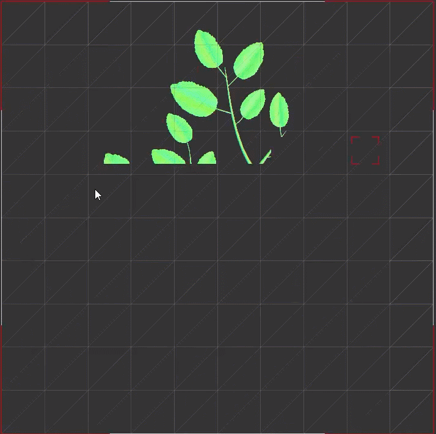
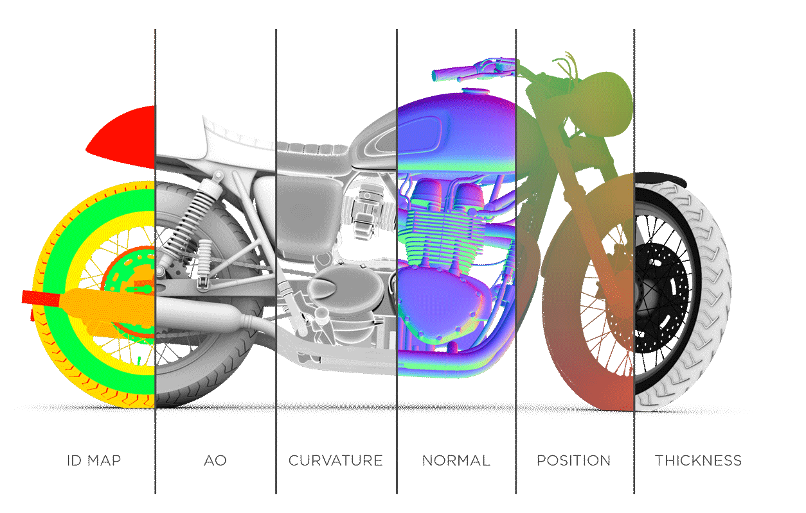

Substance
Summary
| Company | Formerly Allegorithmic, bought by Adobe |
| Date | 2016 - 2019 |
| Tech | C++ / OpenGL / Qt |
The Substance Suite is the leading solution for creating 3D textures and materials. The Substance format is an industry standard, integrated with all the major 3D apps. First adopted by the games industry, Substance is now a major player in films, design, transportation and architecture.
I was the main developer of the Bakers, a core component of Substance Designer and Substance Painter that stores complex details of 3D models in 2D textures.
- Worked on major performance improvements to allow support for 32k textures, with high resolution 3D models
- Cleaning and sanitizing of 3D models
- Coordinated integration of the bakers in Designer and Painter, including UI integration
- Worked with both GPU (OpenGL shaders) and CPU algorithms, ensuring consistency when possible
Performance improvements
| Speed improvements | Up to 4 times faster |
| Memory improvements | Support of high res models (> 16GB in RAM) |
| Cutting edge workflows | UDIM support |
When I came onboard in 2016, the Substance suite was the leading 3D materials solution in the games industry. Allegorithmic wanted to take the product into the Films market, which brought a set of new challenges. VFX studios often work with (ridiculously) high resolution models which can easily go over a million polygons, and they routinely use textures between 8k and 32k resolutions.
For the Substance bakers to handle such a major step up in workload, some drastic performance improvements were required. The refactor took several months, during which I still had to maintain the live versions.
The end result made the bakers up to 4 times faster, while bringing many features like UDIM support and progressive rendering.
Coordination
| Coordination | Coordinating with 3 different development teams |
| Adaptation | Interfacing with different development guidelines and release cycles |
| Git Flow | Use of Git Flow for release management |
The bakers are a core component of the Substance suite, integrated in different softwares. This presented a different set of challenges as I was also responsible for the integration, including the UI. The development teams for each product did not necessarily follow the same guidelines or release cycles, and each team wanted to select which bakers they integrated within their software.
I had to routinely sync up with the different product owners to ensure each release was on track, while regularly updating and bugfixing the live versions of each software. This made me proficient in Git pretty quickly !
Conclusion
All in all, my time at Allegorithmic was amazing. I learned how to make professional software from a team of highly skilled programmers. I learned the inner workings of the 3D art workflow, and what happens behind the scenes for it to function properly. I learned how to communicate efficiently within a rapidly growing company.
It was an invaluable experience and I would gladly do it again !